Managementul serviciilor de recuperare
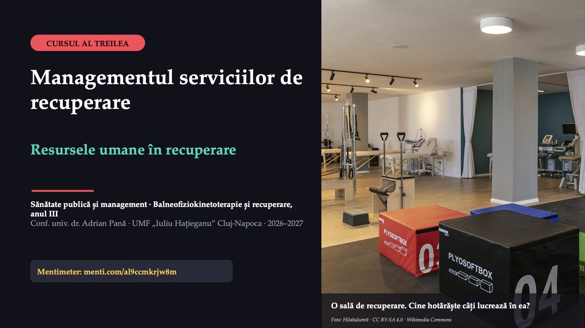
1 / 46Astăzi urmărim un singur serviciu de recuperare și pe coordonatorul lui, de la prima decizie până la ce ar putea urma. Codul Mentimeter rămâne același toată ședința.
1
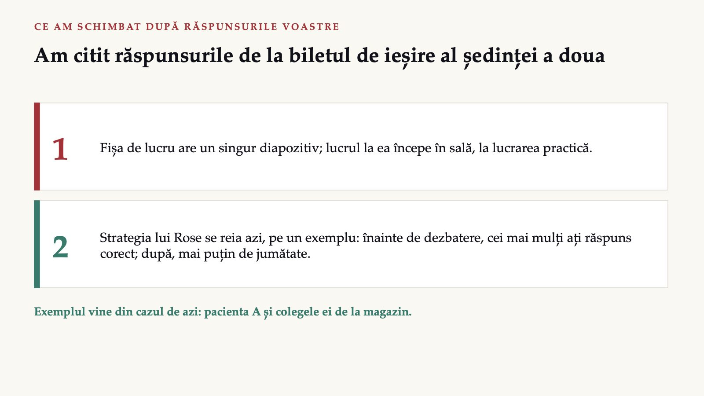
2 / 46Am citit răspunsurile de la biletul de ieșire al ședinței a doua. Două lucruri se schimbă de azi: fișa de lucru are un singur diapozitiv, iar strategia lui Rose o reluăm chiar acum, pe lista de așteptare a coordonatorului D.: printre pacienții lui se află pacienta A și colegele ei de la același magazin. Fișa se explică pe un singur diapozitiv: ce faceți, până când, unde o predați.
Șapte săptămâni de așteptare: ce face coordonatorul?
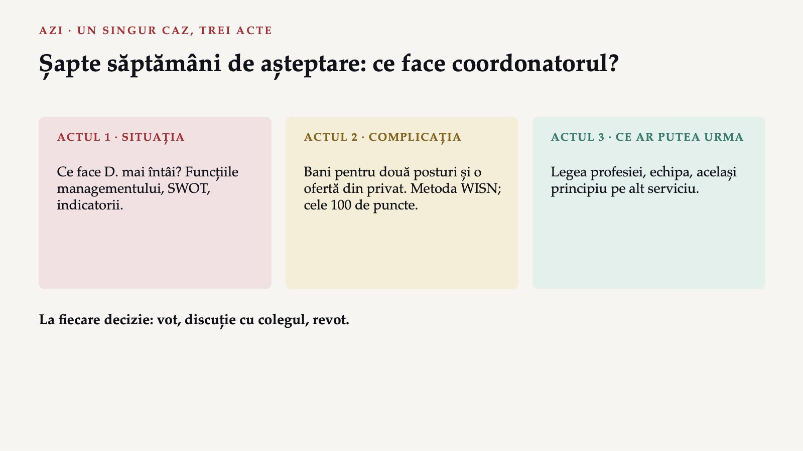
3 / 46Ședința are trei acte, cu același personaj: coordonatorul serviciului. La fiecare decizie votați singuri, discutați cu colegul de bancă, apoi votați din nou; aveți nevoie de un telefon cu internet. Începem cu răspunsul promis după cursul al doilea, despre strategia lui Rose.
Care măsură acționează asupra condițiilor pentru toți angajații, nu numai asupra celor care au deja dureri?
![MENTIMETER · VOT PROLOG · MAGAZINUL PACIENTEI A Managerul vrea mai puține concedii medicale pentru durere lombară anul viitor, cu un buget limitat. Care măsură acționează asupra condițiilor pentru toți angajații, nu numai asupra celor care au deja dureri? A Trimiterea pacientei A la recuperare B Fizioterapie pentru cele trei colege cu dureri C Scaune ajustabile la toate casele de marcat și pauze de mișcare în fiecare tură D Un pliant despre durerea de spate, lăsat în vestiar Răspundeți pe telefon, la codul afișat. Caz construit în scop didactic; cifrele sunt ipotetice. menti.com anonim, fără cont](diapozitive/C03/004.jpg) 4 / 46
4 / 46Votați înaintea oricărei explicații. Contează ce schimbă măsura și la cine ajunge.
Două strategii, două întrebări diferite
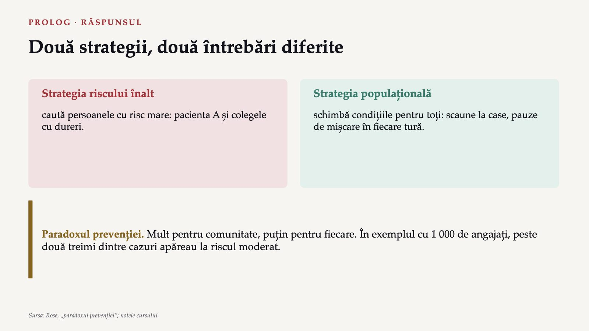
5 / 46Varianta cu scaunele și pauzele schimbă condiția pentru toți, la fiecare tură. Cele două strategii nu se exclud: prima ajută persoanele care suferă deja, a doua reduce numărul celor care vor ajunge să sufere. Prima intervine la evaluare și la exerciții; a doua poate include și un program de mișcare deschis tuturor. Paradoxul prevenției: o măsură cu beneficiu mare pentru comunitate aduce puțin fiecărui participant, de aceea motivația persoanei și a medicului e slabă. Exemplul cu 1 000 de angajați vine din cursul al doilea.
Trei criterii, în sensul acestui curs
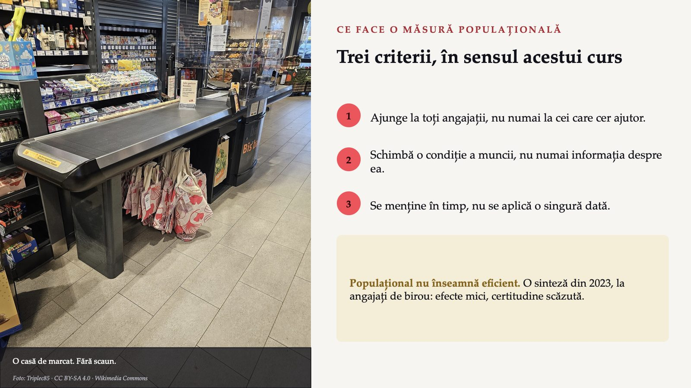
6 / 46Dacă o măsură e populațională și dacă funcționează sunt două întrebări diferite. Sinteza din 2023, la angajați de birou, găsește efecte mici, pe dovezi de certitudine scăzută. Pliantul ajunge la toți, dar nu schimbă nimic; un program de exerciții pentru toți, da. Un coordonator care primește mereu pacienți din același loc de muncă are motiv să propună angajatorului o măsură pentru toți.
Șapte săptămâni de așteptare: ce face coordonatorul mai întâi?
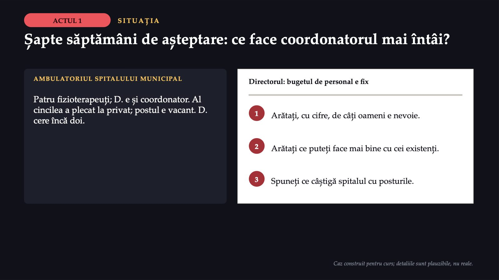
7 / 46Pacienta A a primit aici prima programare peste șapte săptămâni. Serviciul e construit în scop didactic, iar cifrele lui sunt ipotetice. Coordonatorul D. are de răspuns la trei cereri ale directorului, iar bugetul de personal este fix. Al cincilea fizioterapeut a plecat în primăvară la o clinică privată, iar postul lui nu a fost ocupat. În aceeași săptămână, doi pacienți au fost reprogramați de trei ori, iar un medic de familie întreabă de ce pacienții lui se întorc netratați.
Ce ar trebui să facă mai întâi coordonatorul D.?
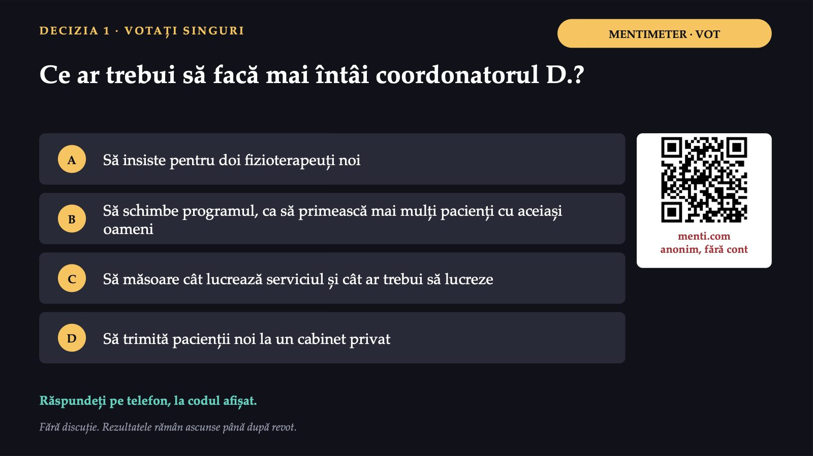
8 / 46Votați singuri, fără să discutați cu nimeni. Rezultatele rămân ascunse până după revot.
Convingeți-l pe colegul care a votat altfel
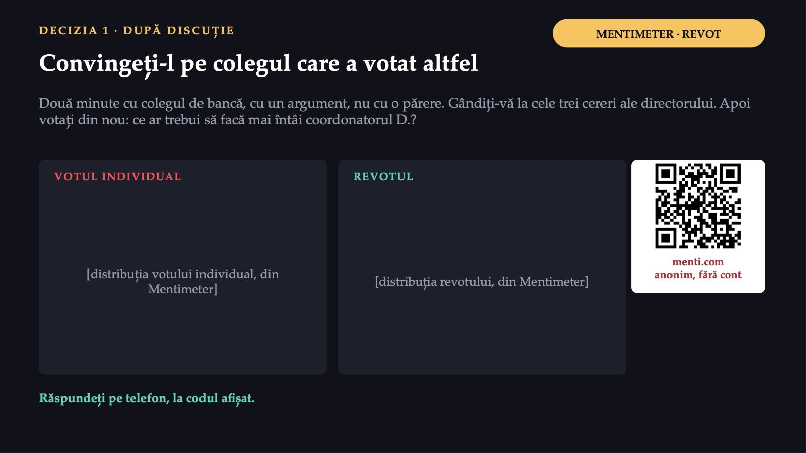
9 / 46Cel care a votat altfel trebuie convins cu un argument, nu cu o părere. Apoi votați din nou, pe aceeași întrebare. Pe ecran vedeți ambele distribuții; explicația vine pe parcursul actului întâi.
Patru funcții, numite în fișa disciplinei
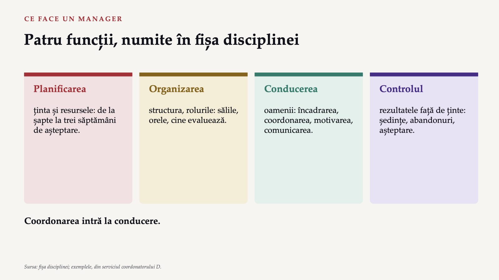
10 / 46Lista de funcții e cea din fișa disciplinei. Organizarea stabilește posturile și rolurile; conducerea alege oamenii pentru ele și lucrează cu ei. În acest curs, coordonarea nu e o funcție separată: intră la conducere. Controlul urmărește pacienții noi, ședințele, abandonurile și așteptarea.
Un cerc, nu patru etape
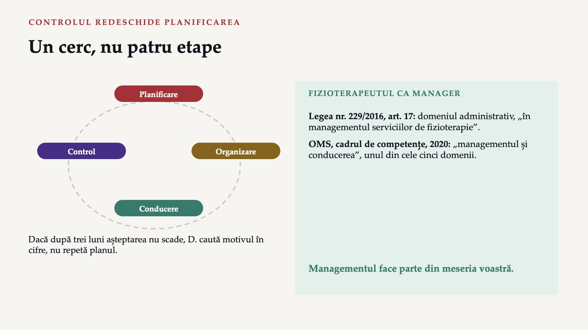
11 / 46Funcțiile se repetă și se sprijină una pe alta. Managementul nu aparține numai directorului de spital: legea îl numește printre domeniile de practică ale fizioterapeutului: art. 17, domeniul administrativ, „în managementul serviciilor de fizioterapie, cu responsabilitatea de a furniza informații privind activitatea de fizioterapie adecvată, în cadrul unor instituții sau comunități”. Cadrul de competențe al OMS din 2020 numără „managementul și conducerea” printre cele cinci domenii ale muncii în recuperare. Motivul nescăderii se caută în cifre: mai puține ședințe decât era posibil, mai multe abandonuri, mai mulți pacienți trimiși decât se estimase.
O misiune bună se poate verifica: spune publicul, rezultatul și termenul.
![MISIUNE, STRUCTURĂ, PROCESE O misiune bună se poate verifica: spune publicul, rezultatul și termenul. Trimiterea Consultul MFR, prescripția Programarea Examinarea, planul Ședințele Reevaluarea, externarea Procesul: fiecare pas poate produce așteptare. Structura: oamenii, spațiile, aparatele, programul. Public sau privat, independent sau în colaborare (Legea nr. 229/2016, art. 15). Paturi de recuperare la 100 000 de locuitori, 2024 România 72,37 Bulgaria 110,91 Ungaria 135,44 Germania 192,41 Polonia 195,03 Sursa: Eurostat, paturi de recuperare, 2024.](diapozitive/C03/012.jpg) 12 / 46
12 / 46Misiunea spune pe cine servește serviciul și ce le oferă; structura, cu ce lucrează; procesele, cum circulă pacientul prin el. Misiunea serviciului D. precizează publicul, rezultatul și termenul de cel mult trei săptămâni de la trimitere. Structura cuprinde și calificările oamenilor și subordonarea. Paturile arată numai partea de spital a recuperării, nu ambulatoriile, bazele de tratament sau cabinetele.
Unde e serviciul acum?
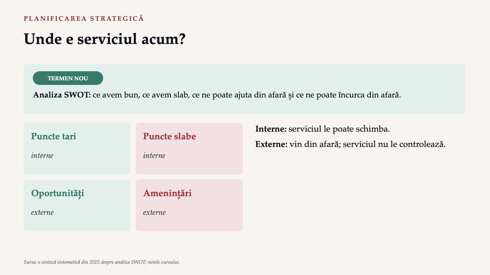
13 / 46Primul termen nou. Numele vine de la inițialele cuvintelor englezești: strengths, weaknesses, opportunities, threats. Regula de bază: separăm ce ține de serviciu de ce vine din afară. Factorii externi vin din spital, de la casa de asigurări, din piața muncii sau din populație; serviciul îi poate folosi sau se poate apăra de ei, dar nu îi controlează.
În ce rubrică intră fiecare factor?
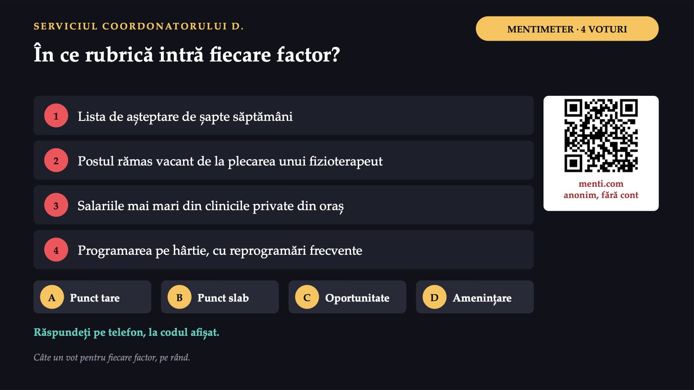
14 / 46Votăm pe rând fiecare factor. Întrebarea de control: poate serviciul să schimbe acest lucru prin propriile decizii?
Poate serviciul să schimbe asta prin propriile decizii?
![RĂSPUNSUL · TABLOUL SERVICIULUI D. (CONSTRUIT) Poate serviciul să schimbe asta prin propriile decizii? PUNCTE TARI Recuperarea după accident vascular cerebral; sala nou utilată; medicul MFR. PUNCTE SLABE Postul vacant; programarea pe hârtie; un singur evaluator; abandonul nemăsurat. OPORTUNITĂȚI Finanțare pentru dotări; doi absolvenți interesați; un angajator care vrea mișcare. AMENINȚĂRI Salariile din privat; bugetul fixat; mai mulți vârstnici după fractură de șold. Lista de așteptare nu e o amenințare: e un efect al punctelor slabe.](diapozitive/C03/015.jpg) 15 / 46
15 / 46Lectura tabloului contează mai mult decât completarea lui. Punctele tari: experiența în recuperarea după accident vascular cerebral, sala de kinetoterapie nou utilată, colaborarea cu medicul MFR. Evaluările inițiale le face un singur fizioterapeut. Un angajator local vrea un program de mișcare. Cazul-limită: postul vacant ține de serviciu, bugetul fixat vine din mediu. Plecarea fizioterapeuților spre privat vine din piața muncii; postul vacant ține de serviciu. În cazurile-limită întrebăm: ține acest lucru de serviciu sau de mediul lui?
Ce face un indicator util
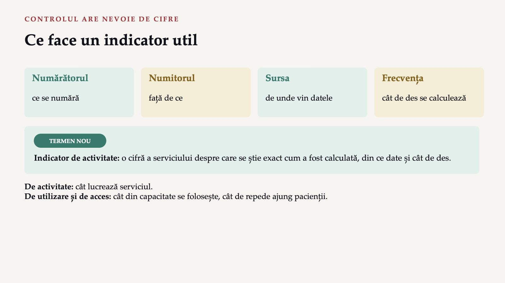
16 / 46Al doilea termen nou. „Câteva sute de ședințe într-o lună” nu spune nimic fără numitor. Un indicator fără numitor poate induce în eroare: nu știm câte ședințe erau posibile și cu câți oameni. Indicatorii de activitate numără pacienții noi, ședințele, evaluările.
Care este numitorul potrivit pentru ponderea pacienților care au abandonat tratamentul?
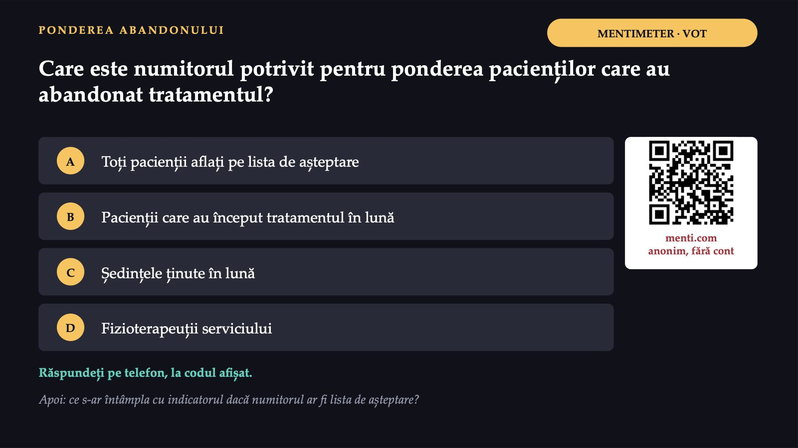
17 / 46Numitorul spune față de ce numărăm. Gândiți-vă și ce s-ar schimba cu alt numitor.
85%
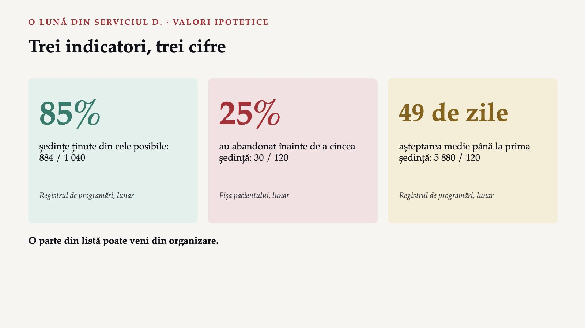
18 / 46Ponderea abandonului are ca numitor pacienții care au început tratamentul în aceeași lună. Așteptarea medie de 49 de zile înseamnă șapte săptămâni; alături se poate raporta și mediana. Împreună: un sfert dintre pacienți abandonează și 15% dintre ședințe se pierd. Lista poate veni din organizare, nu numai din numărul de oameni; o singură lună nu separă explicațiile.
Ce trebuia să facă mai întâi coordonatorul D.?
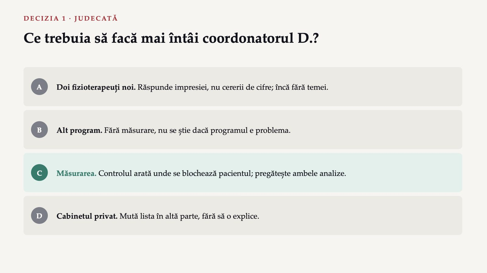
19 / 46Măsurarea vine întâi pentru că este controlul. Ea pregătește cele două analize pe care directorul le poate verifica: ce se poate rezolva cu oamenii existenți și ce nu se poate rezolva fără oameni noi. Doi fizioterapeuți noi poate fi o cerere justă, dar nu are încă temei. Alt program ține de organizare și poate recupera ședințe pierdute. Măsurarea redeschide planificarea. Cabinetul privat nu răspunde la nicio cerere a directorului.
Pauză
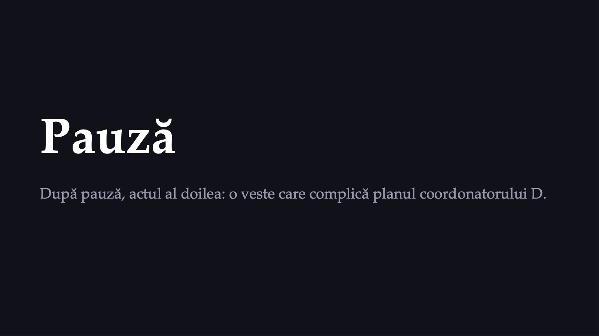
20 / 46Un buget de două posturi și un fizioterapeut cu o ofertă
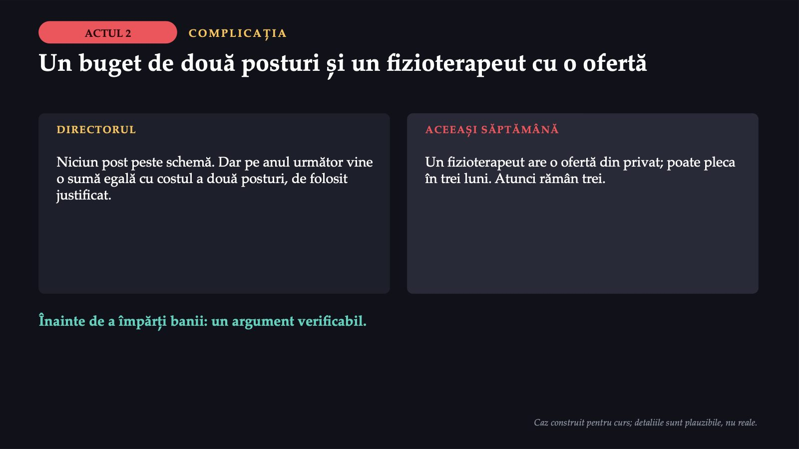
21 / 46Coordonatorul D. aduce directorului indicatorii primei luni. Criza de personal nu mai este o impresie. Bugetul rămâne fix, dar suma egală cu costul a două posturi de fizioterapeut se poate folosi și altfel, dacă alegerea e justificată. Înainte de a împărți banii, D. are nevoie de un argument pe care directorul să-l poată verifica.
Ce argument duce coordonatorul D. la director, ca să arate de câți fizioterapeuți are nevoie serviciul?
![MENTIMETER · VOT DECIZIA 2 · VOTAȚI SINGURI Ce argument duce coordonatorul D. la director, ca să arate de câți fizioterapeuți are nevoie serviciul? A Volumul de muncă al serviciului, măsurat și transformat în necesar de personal B Diferența dintre fizioterapeuții la populație din România și media Uniunii Europene C Lungimea listei de așteptare și plângerile pacienților D Paturile de recuperare ale spitalului, comparate cu media țării Răspundeți pe telefon, la codul afișat. Fără discuție. Rezultatele rămân ascunse până după revot. menti.com anonim, fără cont](diapozitive/C03/022.jpg) 22 / 46
22 / 46Votați singuri, fără să discutați cu nimeni. Rezultatele rămân ascunse până după revot.
Convingeți-l pe colegul care a votat altfel
23 / 46Convingeți-vă reciproc, apoi votați din nou, pe aceeași întrebare. Explicația urmează: întâi cifrele țării, apoi metoda OMS bazată pe volumul de muncă.
3 351
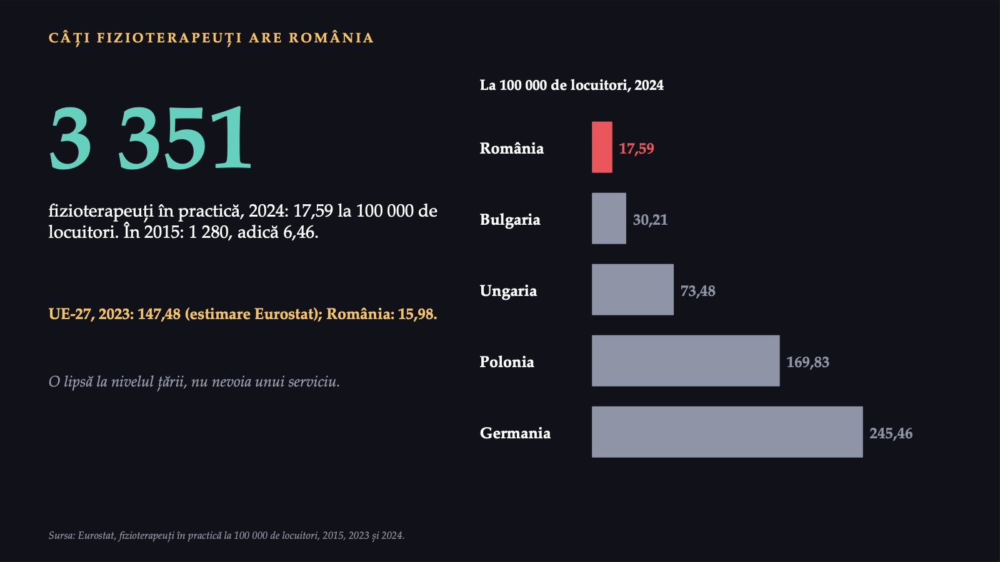
24 / 46Creșterea e reală, dar punctul de plecare a fost foarte jos. Fiecare țară raportează după propriile registre. Diferențele dintre țări se citesc cu prudență: nu știm cum numără România fizioterapeuții din sectorul privat.
Câți fizioterapeuți îi trebuie serviciului coordonatorului D.?
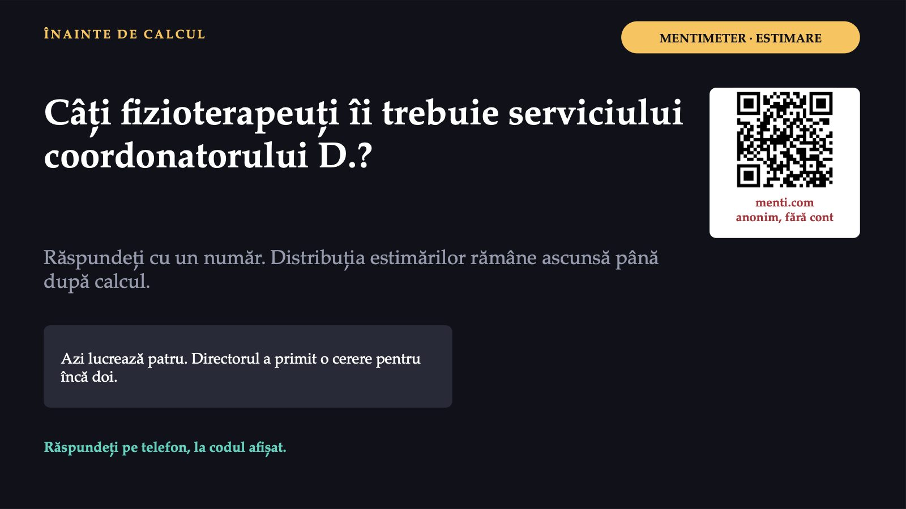
25 / 46Estimați pe telefon, cu un număr, înainte de orice calcul.
Necesarul de personal, din volumul de muncă
 26 / 46
26 / 46Al treilea termen nou. Principiul: necesarul se calculează din munca efectivă a serviciului, nu din paturi, din numărul de locuitori sau din obișnuință. Activitățile de sprijin le fac toți. Exemplul lucrat are etapele A–F, notate cu litere, ca să nu se confunde cu pașii manualului.
Câți fizioterapeuți pentru ședințele de tratament?
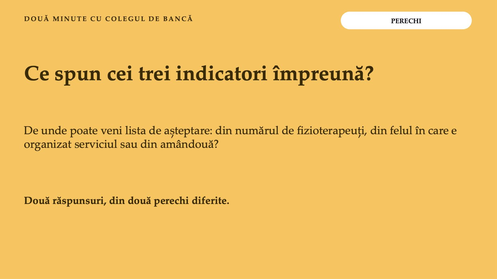
27 / 46Lucrați în perechi. Pacienții care așteaptă pe listă nu intră în volumul anual: el vine din registrul anului anterior.
Aproximativ 6 fizioterapeuți; serviciul are 4
![REZULTATUL · VALORI IPOTETICE Aproximativ 6 fizioterapeuți; serviciul are 4 A Timpul disponibil 260 − 55 = 205 zile; 205 × 7 = 1 435 ore; în minute, 86 100 B Volumul standard evaluare, 45 min: 1 913,3; ședință și reevaluare, 30 min: 2 870 C Cu pacientul 0,627 + 4,181 + 0,348 = 5,157 D Sprijin, 10% factor 1 / 0,90 = 1,111; 5,157 × 1,111 = 5,730 E Coordonarea 40 / 205 = 0,195; 5,730 + 0,195 = 5,925 ESTIMĂRILE VOASTRE [distribuția estimărilor, din Mentimeter] F Raportul WISN = 4 / 5,925 = 0,675. Sub 1: lipsesc aproximativ 2 fizioterapeuți.](diapozitive/C03/028.jpg) 28 / 46
28 / 46Raportul WISN este personalul existent împărțit la necesar. Raportul WISN egal cu 1 înseamnă echilibru, peste 1 surplus, sub 1 personal insuficient pentru volumul de muncă. Cu cât raportul e mai mic, cu atât presiunea e mai mare.
Un temei pentru cerere și o obligație de cinste
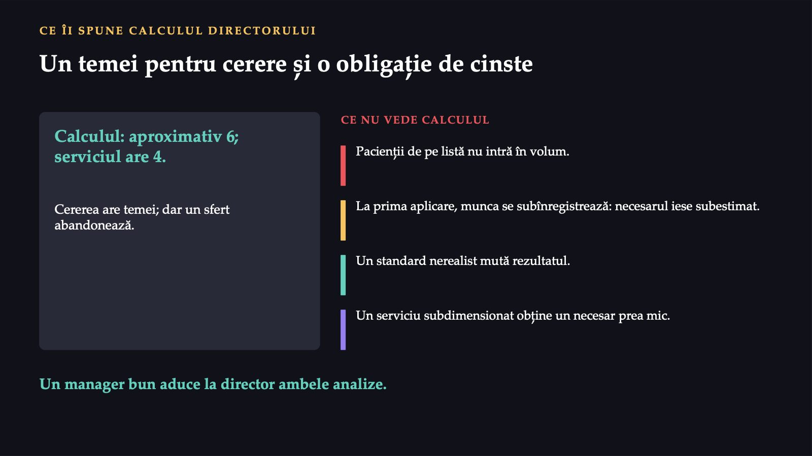
29 / 46Ce se poate rezolva cu oamenii existenți și ce nu se poate rezolva fără oameni noi: acestea sunt cele două analize. Cererea de doi fizioterapeuți are acum un temei, dar un sfert dintre pacienți abandonează: o parte din problemă e de organizare. Manualul OMS cere ca datele să fie confruntate cu mai mult de o sursă. Volumul vine din registrul anului anterior. La prima aplicare, erorile merg aproape întotdeauna spre subînregistrarea muncii. Un standard fixat nerealist de scurt sau de lung mută rezultatul, iar un serviciu subdimensionat, care tratează puțini pacienți, poate obține un necesar prea mic.
Ce argument poate verifica directorul?
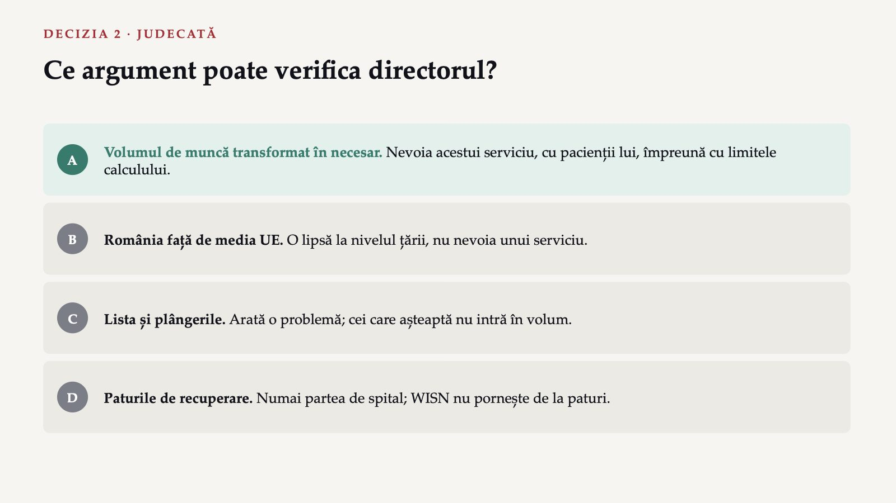
30 / 46Argumentul pe care directorul îl poate verifica este volumul de muncă transformat în necesar de personal, prezentat împreună cu limitele lui. Comparația cu media UE are rezervele de raportare. Lista poate veni și din organizare. Paturile descriu numai partea de spital, iar WISN pornește tocmai de la ideea că necesarul nu se calculează din paturi.
Împărțiți 100 de puncte: suma pe un an egală cu costul a două posturi de fizioterapeut
![MENTIMETER · 100 DE PUNCTE INSTRUMENTUL ȘEDINȚEI Împărțiți 100 de puncte: suma pe un an egală cu costul a două posturi de fizioterapeut 1 Posturi de fizioterapeut 50 de puncte = un post cu normă întreagă 2 Ore suplimentare pentru cei patru ora suplimentară costă dublu: 100 de puncte = o normă 3 Un asistent sau un tehnician 25 de puncte = un post; sprijinul scade de la 10% la 4%; al doilea nu mai scade nimic 4 Formare pentru ședințe de grup 1 punct = 1% din ședințe în grup (4 pacienți, 45 de minute), cel mult 25% Răspundeți pe telefon, la codul afișat. Model construit pe exemplul WISN; costurile și efectele sunt ipotetice. Asistentul preia sprijinul, nu actele profesiei. menti.com anonim, fără cont](diapozitive/C03/031.jpg) 31 / 46
31 / 46Calculul WISN spune câți oameni ar trebui să lucreze în serviciu, dar nu spune cum să fie folosită o sumă dată. Primele două opțiuni adaugă ore de fizioterapeut; celelalte două scad necesarul.
Unde ajunge raportul WISN, după alocare
![CELE 100 DE PUNCTE · VALORI IPOTETICE Unde ajunge raportul WISN, după alocare ALOCAREA MEDIE A SĂLII [alocarea medie, din Mentimeter] Profilul cel mai apropiat: [de completat în sală] Profilul Posturi–ore–asistent–formare Personal Necesar Raport WISN Dacă pleacă unul Punctul de plecare 0–0–0–0 4 5,925 0,675 0,506 Totul în posturi 100–0–0–0 6,00 5,925 1,013 0,844 Împărțit egal 25–25–25–25 4,75 4,886 0,972 — Organizarea întâi 50–0–25–25 5,00 4,886 1,023 0,819 Model construit pe exemplul WISN; calculul: verificari/C03_100_puncte.py.](diapozitive/C03/032.jpg) 32 / 46
32 / 46Valori ipotetice, calculate dinainte cu aceleași noțiuni ca în metoda WISN. Ultima coloană arată raportul dacă pleacă fizioterapeutul care are oferta; pentru „Împărțit egal”, notele nu calculează plecarea. Asistentul și formarea scad necesarul de la 5,925 la 4,886. „Împărțit egal” rămâne sub 1.
Ce ați sacrificat fără să vă dați seama?
 33 / 46
33 / 46Fiecare alocare are un cost ascuns: dependența de recrutare, presupunerile neverificate sau oboseala echipei. Totul în posturi lasă ședințele pierdute și abandonurile neschimbate și depinde întru totul de recrutare, într-o piață în care clinicile private îi atrag tocmai pe fizioterapeuți. Organizarea întâi presupune că ședințele de grup se potrivesc unei părți dintre pacienți și că asistentul preia numai sprijinul. Împărțit egal cere mai mult de la echipă în luna în care unul se gândește să plece.
Coordonatorul D. merge la director cu trei pagini
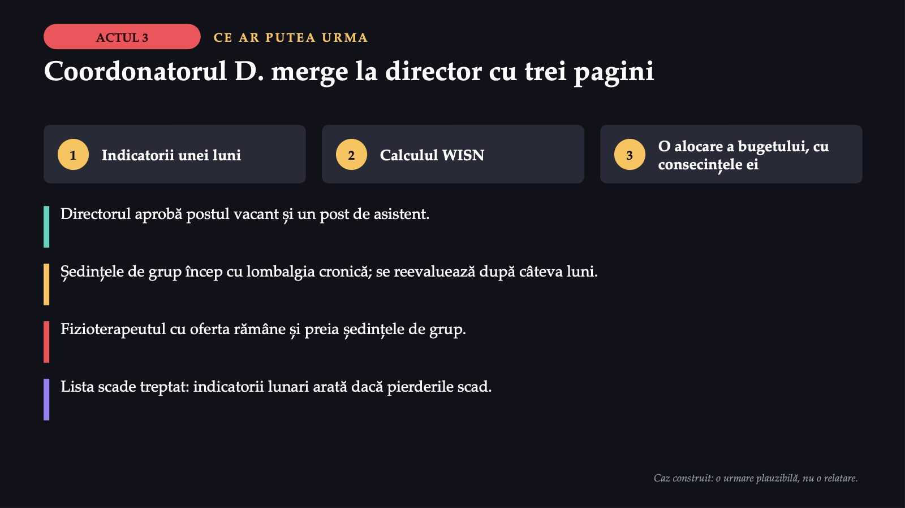
34 / 46Cazul este construit, deci deznodământul lui nu este o relatare, ci o urmare plauzibilă. Formarea pentru ședințele de grup începe cu pacienții cu lombalgie cronică. Lista nu dispare dintr-o dată: indicatorii lunari arată dacă ședințele pierdute și abandonurile scad.
Unde a avut sala dreptate și unde nu
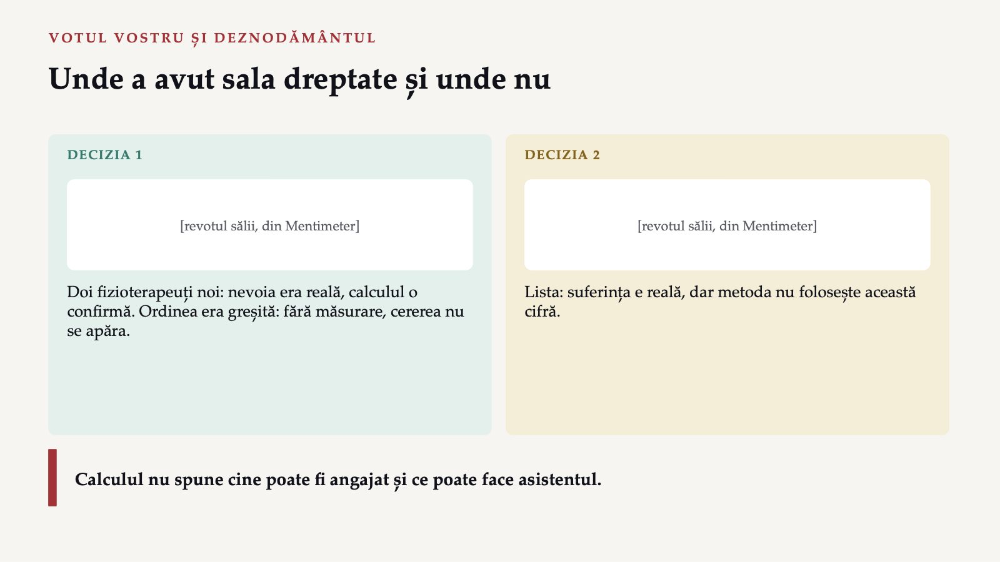
35 / 46Votul vostru se compară acum cu deznodământul. Cine a ales doi fizioterapeuți noi avea dreptate că serviciul are nevoie de oameni, dar a greșit ordinea. Cine a ales lista de așteptare a numit corect suferința reală a pacienților, dar a adus directorului o cifră pe care metoda nu o folosește. Întrebarea care rămâne ține de lege și de echipă: cine poate fi angajat pe postul vacant și ce poate face, legal, asistentul.
Cine are dreptul să lucreze
![LEGEA NR. 229/2016 · FORMA CONSOLIDATĂ LA 12.08.2019 Cine are dreptul să lucreze Art. 4: „posesor al unui titlu oficial de calificare în fizioterapie”, „care aplică, sub prescripție medicală, activitățile specifice” Art. 14 alin. (1): „pe baza autorizației de liberă practică eliberată de Colegiul Fizioterapeuților din România, avizată anual” CONDIȚIILE (ART. 8) titlul de calificare, aptitudinea medicală, calitatea de membru al Colegiului. TERMENELE (ART. 22) autorizația, în cel mult 12 luni de la absolvire; altfel, la cerere, una provizorie, de cel mult 6 luni. Portalul legislativ; art. 8 și 22: rezumate, nu citate.](diapozitive/C03/036.jpg) 36 / 46
36 / 46Profesia se exercită pe baza autorizației de liberă practică, eliberată de Colegiu și avizată anual. Diploma e una dintre condiții, nu temeiul exercitării. Art. 4: „fizioterapeutul este absolventul de studii universitare, posesor al unui titlu oficial de calificare în fizioterapie, conform prevederilor art. 11, care aplică, sub prescripție medicală, activitățile specifice prevăzute la art. 13”. Art. 11 lit. a): „diplomă de licență eliberată de o instituție de învățământ superior acreditată sau autorizată provizoriu din România”; pct. (viii): „balneofiziokinetoterapie și recuperare”. Art. 8 cere și lipsa nedemnității sau a incompatibilității. Art. 14 alin. (1): „fizioterapeutul își exercită profesia pe baza autorizației de liberă practică eliberată de Colegiul Fizioterapeuților din România, avizată anual”.
Ce verifică un coordonator la angajare
 37 / 46
37 / 46Verificarea documentelor la angajare ține de conducere, care cuprinde încadrarea cu personal; organizarea a stabilit dinainte postul și rolul. Art. 20 alin. (1): „Colegiul Fizioterapeuților din România este organizație profesională, cu personalitate juridică, neguvernamentală, de interes public, apolitică, fără scop patrimonial, cu responsabilități delegate de autoritatea de stat”. Atribuțiile, la art. 21: autorizarea, monitorizarea și controlul profesiei, cu Ministerul Sănătății; Codul deontologic; standardele de calitate; Registrul unic al fizioterapeuților. Fără avizul anual, condițiile legii nu sunt îndeplinite, oricât de bun ar fi fizioterapeutul clinic.
Cine poate face parte din echipă
![Sală de proceduri de fizioterapie, Karelia, Rusia Foto: Igor Georgievskiy · CC BY-SA 4.0 · Wikimedia Commons ECHIPA DE RECUPERARE Cine poate face parte din echipă OMS, 2023: cine poate fi cel mai potrivit pentru o intervenție audiologul · dieteticianul și nutriționistul · asistentul medical · terapeutul ocupațional · oftalmologul · optometristul · fizioterapeutul · psihologul · protezistul-ortezistul · asistentul social · profesorul de educație specială · medicul de medicină fizică și de reabilitare · logopedul Pentru pacientul-ancoră: medicul MFR, fizioterapeutul, terapeutul ocupațional, asistentul medical, psihologul, pacientul și familia.](diapozitive/C03/038.jpg) 38 / 46
38 / 46Ideal, mai ales la afecțiunile complexe, recuperarea o oferă echipe pluridisciplinare. Specialiștii răspund, în general, și de supravegherea tehnicienilor și asistenților. Lista OMS numește specialiștii care pot fi cei mai potriviți pentru o intervenție; nu e o prescripție: se citește în contextul fiecărei țări. Echipa pacientului-ancoră vine din fișa disciplinei.
Medicul MFR a prescris zece ședințe de electroterapie. După evaluare, fizioterapeutul crede că pacienta are nevoie întâi de exerciții active și de educație pentru teama de mișcare. Ce ar trebui să facă?
![MENTIMETER · VOT PACIENTA A · FIZIOTERAPEUTUL NOU Medicul MFR a prescris zece ședințe de electroterapie. După evaluare, fizioterapeutul crede că pacienta are nevoie întâi de exerciții active și de educație pentru teama de mișcare. Ce ar trebui să facă? A Aplică prescripția fără discuție B Schimbă singur planul C Discută cu medicul și propune modificarea; planul se schimbă cu acordul medicului D O lasă pe pacientă să aleagă singură Răspundeți pe telefon, la codul afișat. Votul nu are un răspuns marcat. menti.com anonim, fără cont](diapozitive/C03/039.jpg) 39 / 46
39 / 46Votul vostru, apoi legea: ce spun art. 4 și art. 13 despre prescripție și despre plan.
Prescripția medicului, planul fizioterapeutului
![CINE DECIDE CE Prescripția medicului, planul fizioterapeutului Medicul specialist stabilește diagnosticul clinic și prescrie recuperarea. Fizioterapeutul evaluează funcția și elaborează planul, sub prescripția medicului specialist (art. 13). Art. 17: „de a planifica, supraveghea și evalua un plan terapeutic” Matricea de responsabilități: activitățile pe rânduri, membrii echipei pe coloane; în celule, cine face, răspunde, e consultat, e informat. Pentru fiecare activitate răspunde o singură persoană.](diapozitive/C03/040.jpg) 40 / 46
40 / 46Legea trasează limita: prescripția e a medicului, planul fizioterapeutic e al fizioterapeutului, sub prescripția medicului specialist. Obiectivele de recuperare se stabilesc împreună cu pacientul. Matricea o completați la lucrarea practică a treia. Fizioterapeutul stabilește și nevoia de intervenție; art. 17, domeniul clinic. Regula de lucru a cursului: pentru fiecare activitate răspunde o singură persoană; dacă la reevaluare răspund trei, în practică nu răspunde niciunul.
Un an mai târziu, coordonatoarea E. a unei baze de tratament balnear din Județul B: lista crește, doi fizioterapeuți au plecat. Ce soluție ar trebui să susțină?
![MENTIMETER · VOT DECIZIA 3 · ACELAȘI PRINCIPIU, ALT SERVICIU Un an mai târziu, coordonatoarea E. a unei baze de tratament balnear din Județul B: lista crește, doi fizioterapeuți au plecat. Ce soluție ar trebui să susțină? A Doi absolvenți fără autorizație de liberă practică, angajați imediat, „până o obțin” B Ședințele mai simple, făcute de asistenți medicali fără pregătire în fizioterapie C Ședințe scurtate de la o jumătate de oră la un sfert de oră, ca să încapă de două ori mai mulți pacienți D Calculul necesarului din volumul de muncă, apoi un fizioterapeut autorizat și un asistent pentru sprijin Răspundeți pe telefon, la codul afișat. Un singur vot, fără revot. Caz construit pentru curs; detaliile sunt plauzibile, nu reale. menti.com anonim, fără cont](diapozitive/C03/041.jpg) 41 / 46
41 / 46Aplicați aceeași judecată pe un serviciu nou. Votați o singură dată.
Legea și volumul de muncă, împreună
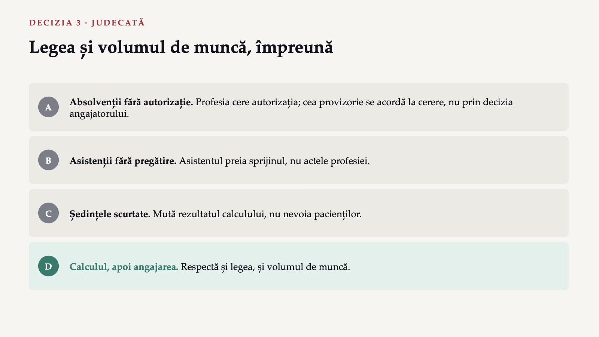
42 / 46Fiecare variantă se decide pe un paragraf din note: legea profesiei, limitele delegării și definiția standardului de activitate. Autorizația provizorie se acordă numai la cerere, în condițiile legii. Asistenții fără pregătire trec dincolo de delegare: actele profesiei sunt definite prin titlul de calificare. Ședințele scurtate schimbă standardul de activitate. Varianta corectă: un fizioterapeut autorizat și un asistent pentru sarcinile de sprijin.
Ce faceți diferit, de luni dimineață
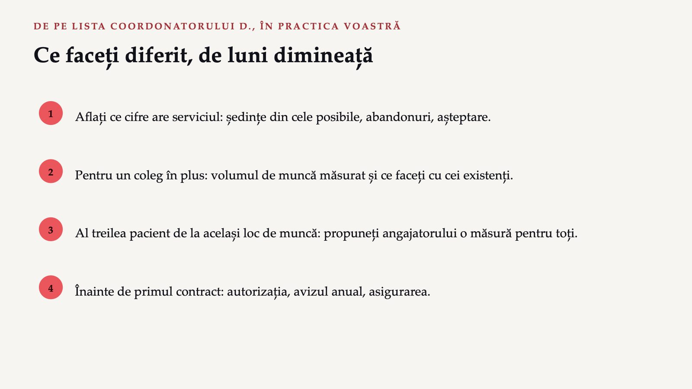
43 / 46Lista de așteptare a coordonatorului D. nu era o fatalitate și nici o problemă numai a directorului. Fără autorizație, aviz și asigurare nu lucrați legal, oricât de bine ați lucra clinic. Pentru un coleg în plus, veniți cu volumul de muncă măsurat și spuneți ce ați face cu oamenii pe care îi aveți. Înainte de primul contract: autorizația de liberă practică, avizul anual, asigurarea de răspundere civilă.
Ce faceți, până când, unde o predați
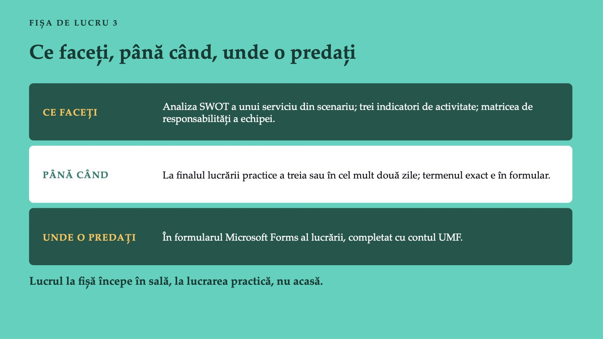
44 / 46Fișa 3 folosește direct ce am lucrat azi: analiza SWOT, indicatorii și matricea de responsabilități. Fiecare indicator are numărător, numitor, sursă și frecvență; matricea este a echipei pacientului-ancoră. Termenul vine din fișa disciplinei.
Strategie, management, oameni: ce a rămas
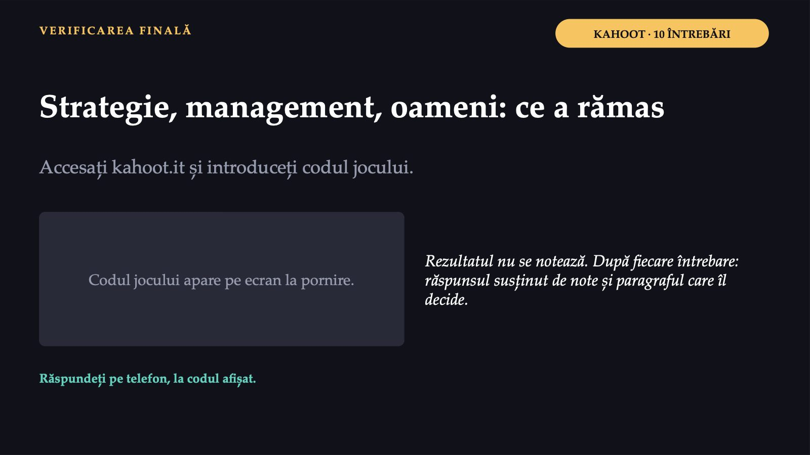
45 / 46Trei întrebări pentru titular
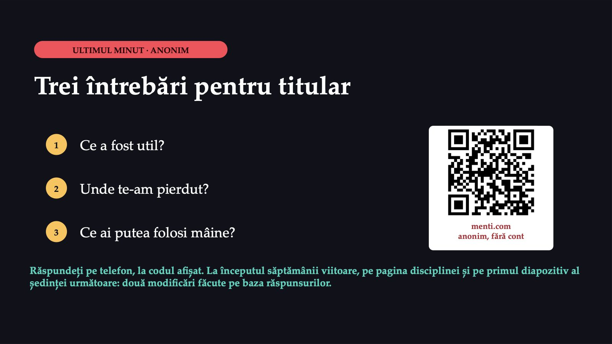
46 / 46Săgeți sau spațiu: navigare · O: vedere de ansamblu · N: notele prezentatorului · F: ecran complet · Esc: închidere